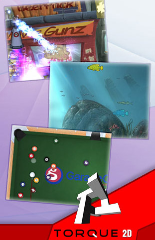
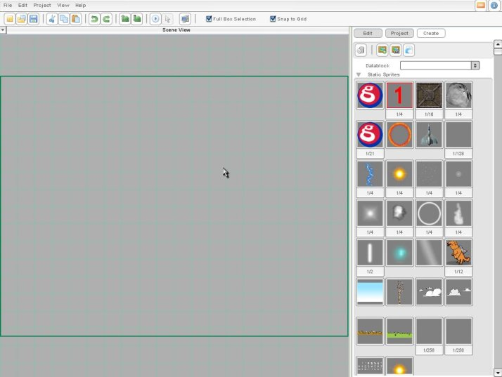
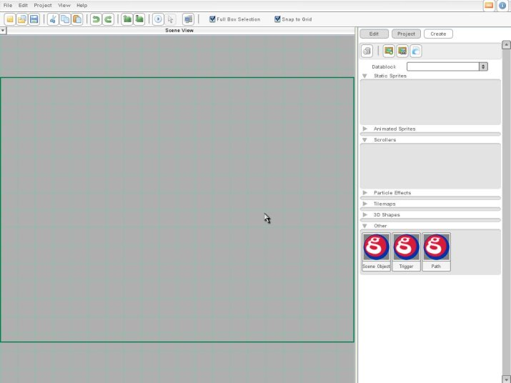

Torque 2D - Shooter Tutorial - Part 1
Introduction
Welcome to Torque 2D (T2D)! Our goal is to empower people from all walks of life to make the best 2D games around. We are looking forward to feedback about your experiences with T2D, since it will help make the most powerful 2D engine on the planet even better! So please remember to stop by the T2D Private Forums and come talk with other T2D developers, get help, and much more. Also, keep an eye on the Torque 2D Product Page for updates.
Okay, let’s get on with this tutorial. We're going to walk you through a quick example of how to use T2D. By the end of this shooter tutorial, you’ll have learned how to load sprites and particle effects, set up collision detection, accept player input, and even add a hint of gameplay!
We’ll treat T2D pretty much as a black box - rather than explaining how everything works inside T2D, our goal here is just to get you up and running as quickly as possible. This tutorial is written so that pretty much anyone can understand it; experienced programmers will no doubt want to skip over some of the explanatory stuff. We’re not trying to provide a whole programming tutorial; We assume you are at least capable of reading and understanding simple scripts. If you want more information on TorqueScript, please see the Torque Documentation in the documentation/reference/ folder.
We’ll be adding to the T2D documentation more and more over time. Be sure to regularly check back and watch for new T2D documentation.
Alright, let’s see how to get some stuff up on the screen!
1. Getting Started
T2D comes with some example demos, which you can look at and learn from. You can think of these demos as mini-"Starter Kits", which show you simple examples of how to build particular kinds of games. The Scene Editor is an invaluable tool in creating your game scenes (as shown in Figure 1.1.1).

Figure 1.1.1
That is the base T2D Scene Editor. From here, you can create and edit your scenes as well as launch T2D's GUI Builder, Particle Builder, Image Builder, Animation Builder, and Tile Builder. You can also hook into the T2D community and forums. Let’s dig in!
The Scene Editor allows users to easily start new projects through a simple project creation wizard. This gives designers a much more flexible approach to creating new projects, since the Scene Editor automatically creates all of the files a user needs to make a game. This section of the shooter tutorial will help you work through the process of starting a brand new game project from scratch.
To start, open up your T2D.exe (by clicking the T2D icon on your desktop). Now make a new project and give it a logical name (like shooterTutorial).
At this point you should see the Scene Editor with an open workspace, as shown here (as shown in Figure 1.2.4):

Figure
1.2.4
When you create a new project, the T2D Scene Editor automatically sets up the base file hierarchy for your project. Windows and Mac users can find their project directory (assuming you've used the default install direcory) in the following locations:
Windows: "C:/Users/USER_NAME/Documents/MyGames/yourProjectName" (depending on which version of Windows you are using)
So, what should we put up on the screen? Remember, we’ve got those nifty little demos with lots of art to pull from, so let’s use art from those. In fact, let’s use the side-scrolling shooter demo. In this tutorial, we’ll see how to get started making a little "game" just like this demo. When we’re all done, you should not only have a good feel for how to get started with T2D, but you can compare the simple example code we create in this tutorial to the full demo code, and see what the differences are. It will help you learn more about creating more complex projects in T2D.
Important Step - Go back to the games folder. Now go to the BehaviorShooter/data/images folder, and copy everything in there (a bunch of pictures) over to our yourProjectName/data/images folder. Choose to replace any files that you get asked about. And viola, we’ve got some art to work with. Go into the BehaviorShooter/data/particles folder and copy out the playerJet, and big_explosion effects into your own yourProjectName/data/particles folder, so we can add some good-looking particle effects to the game later. Also, you will want to add the particleArt resource from the Project->Resources menu.
Now, use the ImageMap Builder to load "playership.png" into your project, using the defaults settings (FULL).
Now that you know how to import images, repeat this process to import the rest of the images we will need for this tutorial: bg_blank_sky, enemyMissile, enemyShip1, and playerMissile. Also we will want to import our particle images. One thing to note, when you import your particles, for this tutorial, you will need to modify their Image Mode to CELL within the Image Builder menu. Import particles1, particles2, particles5, and particles6.
Once you have all of your images imported, we can begin making our game world.